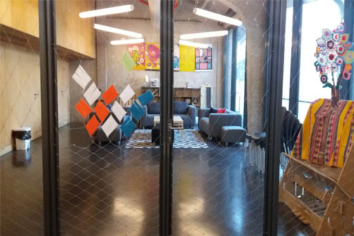

El último piso de la nave Alameda es más pequeño que los dos inferiores, ocupando una superficie que va desde la fachada de la Plaza de las Letras hasta aproximadamente la mitad de la nave. El resto corresponde al tejado del piso de abajo.
La planta es aproximadamente cuadrada y está dividida en tres espacios: un pasillo distribuidor, la zona de las residencias y el Minilab C.
Si accedemos desde La Cosa, tendríamos que subir la escalera y doblar a la derecha en el último rellano, hasta llegar a una puerta de cristal de apertura automática. Al cruzarla, desembocamos en el pasillo distribuidor cuya pared izquierda, de hormigón, limita con el tejado. El primer tramo se ensancha hacia la derecha para dar paso a la zona de residencias, que llega hasta la fachada de la Plaza de las Letras; a la izquierda, pegadas a la pared, hay unas máquinas expendedoras. El pasillo se estrecha en su parte central, donde está ubicada la estructura de madera que alberga el ascensor. Frente a este, en la parte de arriba de la pared de hormigón, se abre una ventana semicircular. Al fondo, el pasillo se vuelve a ensanchar, formando una pequeña sala de trabajo: el Minilab C.
⇧ Volver arriba
Medialab tiene un área de residencias para acoger a personas que vienen a colaborar en talleres, dar charlas o desarrollar proyectos artísticos. Esto permite establecer contactos, redes y sinergias con los grupos de trabajo que habitualmente acuden al centro.
Las residencias son tres pequeños apartamentos con un espacio común de socialización, formado por un salón y una mini cocina. Cuando los apartamentos están vacíos, este salón puede utilizarse también para actividades y así aprovechar mejor los espacios.
La zona de residencias está separada del pasillo distribuidor por un cerramiento de malla metálica, donde se abre la puerta de acceso que da paso a la sala común. La pared situada a nuestra derecha es toda de cristal, con un ventanal de suelo a techo desde el que se ven el patio y La Cosa. Frente a la puerta, el muro de hormigón que da a la Plaza de Letras no tiene ventanas, ya que sostiene por el exterior la fachada digital. A la izquierda, encontramos una pared de madera con las tres puertas de los apartamentos y, a continuación de éstas, la cocina, ubicada en un pequeño pasillo detrás del ascensor.
El techo es de hormigón, con la cubierta a dos aguas y todas las instalaciones a la vista; y el suelo, de hormigón pulido color gris oscuro. Es el mismo estilo industrial que vemos en el resto de Medialab, sin embargo la decoración y el mobiliario de este espacio le dan un aire más doméstico y acogedor. En el centro hay tres sofás y varios pufs, con una mesa baja entre ellos, y una alfombra con motivos geométricos en blanco y negro. Al fondo del salón, contra el muro de hormigón y frente a la puerta de entrada, una estantería de cartón hecha en el Fablab.
Los tres apartamentos tienen idéntica distribución: un espacio estrecho y alargado con paredes de madera y techos muy altos, lo que permite situar justo encima de la puerta de entrada un altillo con la cama y el baño, al que sube por una escalera metálica adosada a la pared de la izquierda. Frente a la puerta, al fondo, hay una ventana que da a la calle Alameda y bajo ésta un escritorio con una silla.
⇧ Volver arriba
El Minilab C es un espacio que se abre hacia la derecha, al final del pasillo distribuidor. Su pared izquierda es el muro de hormigón del propio pasillo, con una puerta al fondo, elevada sobre el nivel del suelo, que se utiliza para labores de mantenimiento en el tejado. La siguiente pared, en ángulo recto, tiene tres grandes ventanas hacia la calle Alameda. Las otras dos paredes son de madera, una limita con las residencias y la otra, a mano derecha según entramos, es la pared lateral de la estructura de madera que alberga el ascensor.
⇧ Volver arriba
⇦ Anterior: Nave Alameda - Planta 1
⇨ Siguiente: Nave Cenicero - Planta 0